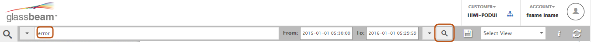
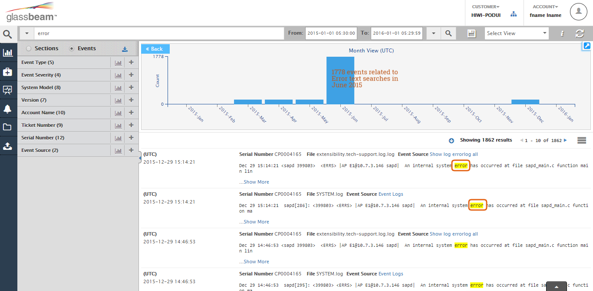
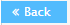
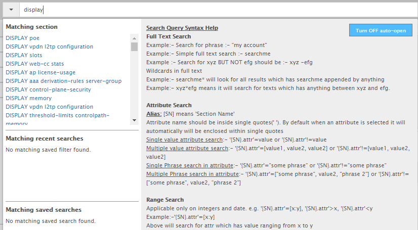
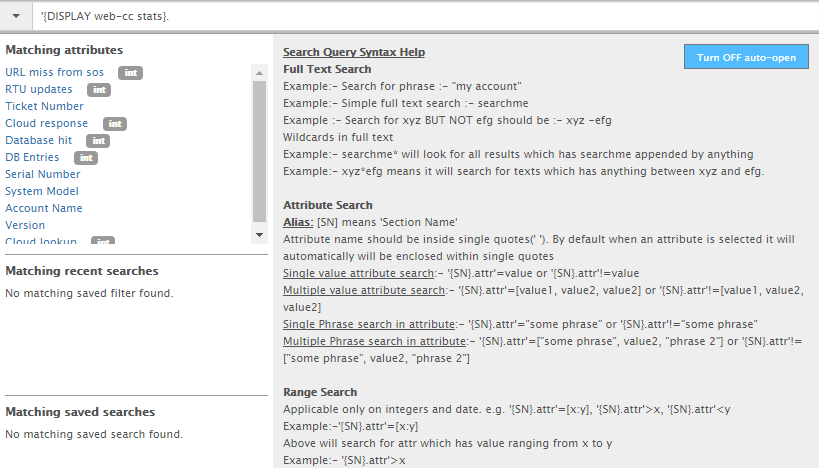
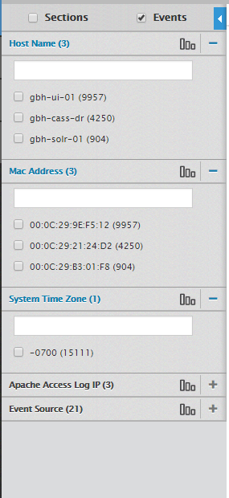
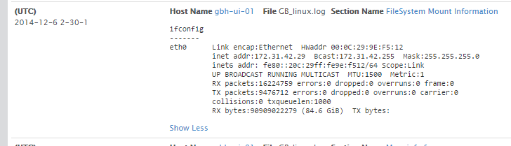
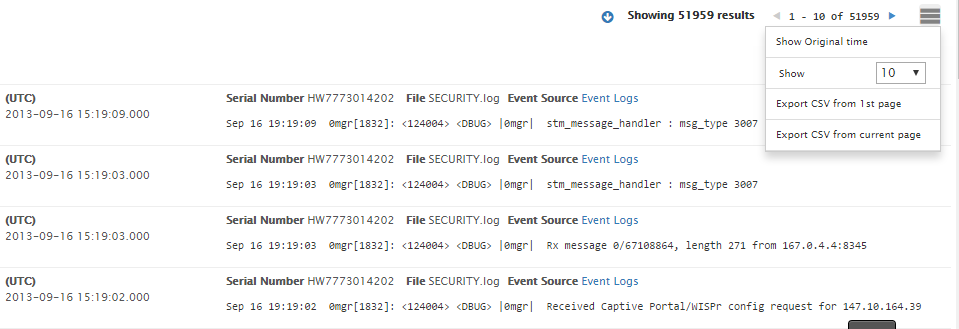

Run Search Queries on Your Log Data
There are multiple ways of performing a basic search. Before you start a specific search, by default, Glassbeam Explorer displays all the data for a given date-time range on the results pane because it starts the search with the default asterisk (*) in the search text box.
By default, the results area displays the indexed data for the last 3 to 7 days from the current date and time.
Note: Section related log data is displayed by default if your Explorer application is configured to parse and retrieve both sections and events related indexed data, unless it is configured otherwise.
Do the following to start a search in the Glassbeam Explorer landing page:
- Enter the search criteria into the Search text box.

- By default search suggestions, in Search Help drop down, are displayed for possible search terms or for any matching sections or events, matching recent searches, and matching saved search filters based on what you are entering. Refer to this section Getting instant assistance when searching the indexed log data for more information. To turn off auto help suggestions, refer to the Turn on or off auto help section.
- Perform a full text search:
- Enter the text you want to search for in the search for. For example, ‘error’. In this example, the Event option is selected. Explorer will search for all occurrences of the text ‘error’ in all Event instances within the log file. See the graphic below.

In the graphic, you will see that there are over 1800 occurrences of the text ‘error’ found across the log file. One of the largest occurrences happened June 2015, over 1778.
Note: Use the Back button on the top right (graphic timeline search) to step to previous search screen. As you drilldown using the graph timeline search, you can use the Back button to go back to previous screen. Also, use the Toggle Timeline icon to collapse the graph timeline and get more space to see the rest of the Results area.
- Perform an Attribute Search:
Depending on whether you select the Section or Event filter from the Facet panel, use the following syntax for searching:
- 'sectionname.attributename'=“value" – to search for specific values of an attribute in the log file.
- 'sectionname.INTEGERattributename'=123
- 'sectionname.STRINGattributename'=string with multiple words
- 'sectionname.STRINGattributename'=“string exact phrase”
- 'sectionname.STRINGattributename'=STR* - (produces results with value STR<anything>)
- ‘eventname.attributename’=“value” – to search within events
All options of applying STRING, INTEGER, and WILD CARD apply when searching for event-based data
- When you enter text related section names, you will get suggestions for all possible section names that match the entered text. Once you choose a particular section/event name, you will get suggestions of all attributes related to the selected section/event name. You can now select a specific attribute and pass a value.
For example, enter the text ‘display’ in the search bar. The following graphic shows the matching attributes for the text ‘display’ section.

In the above graphic, you can see that Explorer has searched for the text ‘Display’ and all the matching sections contain that text is displayed. Now, you can choose a section and further filter a particular attribute. For example: by selecting “Display web-cc-stats”, all matching attributes within the Display web-cc-stats section is displayed. See the graphic below:

Click an attribute from the list. In this example, we select RTU updates. The search expression is now appended with the attribute ‘RTUUpdates’ attribute to a ‘Display web-cc-stat’ section. You can also search for a particular value by appending the search expression with “value” syntax.
In this case, the search query will be:
'{DISPLAY web-cc stats}.RTU updates'="2". Since, RTU Updates was integer as indicated by the tag INT in the MatchingAttributes area.
Press Enter or click the Search icon to start your search.
- Expand the Facets pane. Select the appropriate filter attributes for a particular facet by selecting the check boxes, or by entering the search criteria directly into the text box displayed within the facet category.
Glassbeam Explorer automatically suggests matching entries as you type. You can select one or more values of a given facet.
Facet search therefore, allows you to apply multiple filter criteria to your search. The selected search facets appear above. You can clear individual facets selected by clicking on the ‘x’ mark next to each selected facet. If you want to clear all the applied facets, click the Clear Applied Filter button in search bar.

- When you search, by default, the search results are displayed according to events. Events are time series data within your log bundle. However, you can set the search results to display by sections. To search within the sections of the log files, select the Sections radio button. Sections are non-time series data. To search for the events in the log files, select the Events radio button.
Sample: Section related information from a log:

Sample: Event related information from a log:

- Click the Search icon to start your search.
Note: The number of results found is displayed below the graph in the results area. The search attribute or text is highlighted in the results list. Results are paginated if there are many records.
Created with the Personal Edition of HelpNDoc: Easily create PDF Help documents